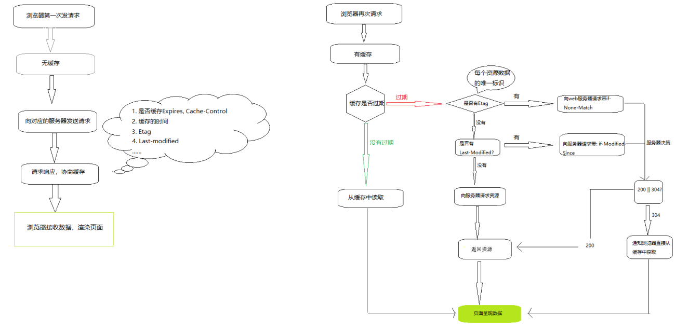

性能优化
一、浏览器功能与组成
浏览器应该有的功能
网络：
浏览器通过网络模块来下载各式各样的资源，例如html文本；javascript代码；样式表；图片；音视频文件等。
网络部分尤为重要，因为它耗时长，而且需要安全访问互联网上的资源。
资源管理：
从网络下载，或者本地获取到的资源需要有高效的机制来管理它们。
例如如何避免重复下载，资源如何缓存等等
网页浏览：
这是浏览器的核心也是最基本的功能，最重要的功能。
如何将资源转变为可视化的结果。
多页面管理
插件与管理
账户和同步
安全机制
开发者工具
浏览器的主要功能总结起来就是一句话:将用户输入的url转变成可视化的图像。###浏览器的内核(渲染引擎)
在浏览器中有一个最重要的模块，它主要的作用把一切请求回来的资源变为可视化的图像。
这个模块就是浏览器内核，通常它也被称为渲染引擎。
浏览器内核总结：
IE---------->Trident
Safari------>WebKit
WebKit本身主要是由两个小引擎构成的，
一个正是渲染引擎“WebCore”，
另一个则是javascript解释引擎“JSCore”，
它们均是从KDE的渲染引擎KHTML及javascript解释引擎KJS衍生而来。
Chrome------>WebKit的分支引擎----->Blink
在13年发布的Chrome 28.0.1469.0版本开始，Chrome放弃Chromium引擎转
而使用最新的Blink引擎（基于WebKit2——苹果公司于2010年推出的新的WebKit引擎），
Blink对比上一代的引擎精简了代码、改善了DOM框架，也提升了安全性。
Opera
旧版Opera 4至6版本 :Elektra排版引擎
Opera7.0 :Presto渲染引擎
Opera在2013年2月宣布放弃Presto:
采用Chromium引擎;
又转为Blink引擎;
Firefox------>Gecko###进程与线程
进程: 程序的一次执行, 它占有一片独有的内存空间.是操作系统执行的基本单元。
一个进程中至少有一个运行的线程: 主线程, 进程启动后自动创建
一个进程中也可以同时运行多个线程, 我们会说程序是多线程运行的
一个进程内的数据可以供其中的多个线程直接共享，多个进程之间的数据是不能直接共享的
线程：是进程内的一个独立执行单元,是CPU调度的最小单元。程序运行的基本单元
线程池(thread pool): 保存多个线程对象的容器, 实现线程对象的反复利用
JS引擎是单线程运行的！（回忆事件轮询机制）###现代浏览器：多进程、多线程模型
1.不堪回首的过去:
当你通过浏览器打开很多页面的时候,如果其中一个页面不响应了或者崩溃了,
那么随之而来的将会是更不幸的事情,你开打的所有页面都会得不到响应,
最让人不能忍受的是,其中的一些页面可能还包含了未保存或者未发送的信息
2.浏览器产商如何解决？
采用多进程模型,该模型可以带来的好处
①.避免因单个页面的不响应或者崩溃影响整个浏览器的稳定性
②.当第三方插件崩溃时,也不会影响整个浏览器的稳定性
③.安全
3.浏览器到底有些什么进程
①.Browser进程:
浏览器的主进程,负责浏览器界面的显示,和各个页面的管理,
浏览器中所有其他类型进程的祖先,负责其他进程的的创建和销毁
它有且只有一个!
②.Renderer进程:
网页渲染进程,负责页面的渲染,可以有多个
当然渲染进程的数量不一定等于你开打网页的个数
③.各种插件进程
④.GPU进程
移动设备的浏览器可能不太一样:
Android不支持插件,所以就没有插件进程
GPU演化成了Browser进程的一个线程
Renderer进程演化成了操作系统的一个服务进程,它仍然是独立的
4.每个进程内部又有很多线程
多线程的目的主要是保持用户界面的高度响应
例如:为了不让Browser进程的UI线程被其他耗时的操作(大文件的加载,本地文件读写)所阻塞,
那么我们就把这些操作放到分线程中去处理。
在Renderer进程中,为了不让其他操作阻止渲染线程的高速执行,我们通常会将渲染过程【管线化】,
利用计算机的多核优势,让渲染的不同阶段在不同的线程中执行 一、浏览器渲染引擎
主要模块
- 一个渲染引擎主要包括：HTML解析器，CSS解析器，javascript引擎，布局layout模块，绘图模块
- HTML解析器：解释HTML文档的解析器，主要作用是将HTML文本解释成DOM树。
- CSS解析器：它的作用是为DOM中的各个元素对象计算出样式信息，为布局提供基础设施
- Javascript引擎：使用Javascript代码可以修改网页的内容，也能修改css的信息，javascript引擎能够解释javascript代码，并通过DOM接口和CSS树接口来修改网页内容和样式信息，从而改变渲染的结果。
- 布局（layout）：在DOM创建之后，Webkit需要将其中的元素对象同样式信息结合起来，计算他们的大小位置等布局信息，形成一个能表达这所有信息的内部表示模型
- 绘图模块（paint）：使用图形库将布局计算后的各个网页的节点绘制成图像结果
备注：文档对象模型（Document Object Model，简称DOM）
大致的渲染过程
- 浏览器渲染页面的整个过程：浏览器会从上到下解析文档。
- 遇见 HTML 标记，调用HTML解析器解析为对应的 token （一个token就是一个标签文本的序列化）并构建 DOM 树（就是一块内存，保存着tokens，建立它们之间的关系）。
- 遇见 style/link 标记调用相应解析器处理CSS标记，并构建出CSS样式树。
- 遇见 script 标记 调用javascript引擎 处理script标记、绑定事件、修改DOM树/CSS树等
- 将 DOM树 与 CSS树 合并成一个渲染树。
- 根据渲染树来渲染，以计算每个节点的几何信息（这一过程需要依赖GPU）。
- 最终将各个节点绘制到屏幕上。
- 遇见 HTML 标记，调用HTML解析器解析为对应的 token （一个token就是一个标签文本的序列化）并构建 DOM 树（就是一块内存，保存着tokens，建立它们之间的关系）。
以上这些模块依赖很多其他的基础模块，包括要使用到网络 存储 2D/3D图像 音频视频解码器 和 图片解码器。
所以渲染引擎中还会包括如何使用这些依赖模块的部分。
二、阻塞渲染
####1.关于css阻塞：
声明：只有link引入的外部css才能够产生阻塞。
1.style标签中的样式：
(1). 由html解析器进行解析；
(2). 不阻塞浏览器渲染（可能会产生“闪屏现象”）；
(3). 不阻塞DOM解析；
2.link引入的外部css样式（推荐使用的方式）：
(1). 由CSS解析器进行解析。
(2). 阻塞浏览器渲染(可以利用这种阻塞避免“闪屏现象”)。
(3). 阻塞其后面的js语句的执行：
(4). 不阻塞DOM的解析(绝大多数浏览器的工作方式)：
3.优化核心理念：尽可能快的提高外部css加载速度
(1).使用CDN节点进行外部资源加速。
(2).对css进行压缩(利用打包工具，比如webpack,gulp等)。
(3).减少http请求数，将多个css文件合并。
(4).优化样式表的代码####2.关于js阻塞：
1.阻塞后续DOM解析:
原因：浏览器不知道后续脚本的内容，如果先去解析了下面的DOM，而随后的js删除了后面所有的DOM，
那么浏览器就做了无用功，浏览器无法预估脚本里面具体做了什么操作，例如像document.write
这种操作，索性全部停住，等脚本执行完了，浏览器再继续向下解析DOM。
2.阻塞页面渲染:
原因：js中也可以给DOM设置样式，浏览器等该脚本执行完毕，渲染出一个最终结果，避免做无用功。
3.阻塞后续js的执行:
原因：维护依赖关系，例如：必须先引入jQuery再引入bootstrap
####3.备注
【备注1】：css的解析和js的执行是互斥的（互相排斥），css解析的时候js停止执行，js执行的时候css停止解析。
【备注2】：无论css阻塞，还是js阻塞，都不会阻塞浏览器加载外部资源（图片、视频、样式、脚本等）
原因：浏览器始终处于一种：“先把请求发出去”的工作模式，只要是涉及到网络请求的内容，
无论是：图片、样式、脚本，都会先发送请求去获取资源，至于资源到本地之后什么时候用，
由浏览器自己协调。这种做法效率很高。
【备注3】：WebKit 和 Firefox 都进行了【预解析】这项优化。在执行js脚本时，浏览器的其他线程会预解析文档的其余部分，
找出并加载需要通过网络加载的其他资源。通过这种方式，资源可以在并行连接上加载，
从而提高总体速度。请注意，预解析器不会修改 DOM 树在上述的过程中，网页在加载和渲染过程中会触发“DOMContentLoaded”和“onload”事件
分别是在DOM树构建（解析）完成之后，以及DOM树构建完并且网页所依赖的资源都加载完之后
上面介绍的是一个完整的渲染过程，但现代网页很多都是动态的，这意味着在渲染完成之后，由于网页的动画或者用户的交互，
浏览器其实一直在不停地重复执行渲染过程。（重绘重排），以上的数字表示的是基本顺序，这不是严格一致的，
这个过程可能重复也可能交叉
三、图层与重绘重排
###css图层
浏览器在渲染一个页面时，会将页面分为很多个图层，图层有大有小，每个图层上有一个或多个节点。
在渲染DOM的时候，浏览器所做的工作实际上是：
1. 获取DOM后分割为多个图层
2. 对每个图层的节点计算样式结果 （Recalculate style--样式重计算）
3. 为每个节点生成图形和位置 （Layout--布局，重排,回流）
4. 将每个节点绘制填充到图层位图中 （Paint--重绘）
5. 图层作为纹理上传至GPU
6. 组合多个图层到页面上生成最终屏幕图像 （Composite Layers--图层重组）###图层创建的条件
Chrome浏览器满足以下任意情况就会创建图层：
1. 拥有具有3D变换的CSS属性
2. 使用加速视频解码的<video>节点
3. <canvas>节点
4. CSS3动画的节点
5. 拥有CSS加速属性的元素(will-change)###重绘(Repaint)
重绘是一个元素外观的改变所触发的浏览器行为，例如改变outline、背景色等属性。浏览器会根据元素的新属性重新绘制，
使元素呈现新的外观。重绘不会带来重新布局，所以并不一定伴随重排。
需要注意的是：重绘是以图层为单位，如果图层中某个元素需要重绘，那么整个图层都需要重绘。
所以为了提高性能，我们应该让这些“变化的东西”拥有一个自己一个图层，
不过好在绝大多数的浏览器自己会为CSS3动画的节点自动创建图层。###重排(Reflow 又称：回流)
渲染对象在创建完成并添加到渲染树时，并不包含位置和大小信息。计算这些值的过程称为布局或重排
"重绘"不一定需要"重排"，比如改变某个网页元素的颜色，就只会触发"重绘"，不会触发"重排"，因为布局没有改变。
"重排"大多数情况下会导致"重绘"，比如改变一个网页元素的位置，就会同时触发"重排"和"重绘"，因为布局改变了。###触发重绘的属性
* color * background * outline-color
* border-style * background-image * outline
* border-radius * background-position * outline-style
* visibility * background-repeat * outline-width
* text-decoration * background-size * box-shadow###触发重排(回流)的属性
* width * top * text-align
* height * bottom * overflow-y
* padding * left * font-weight
* margin * right * overflow
* display * position * font-family
* border-width * float * line-height
* border * clear * vertival-align
* min-height * white-space###常见的触发重排的操作
Reflow(重排) 的成本比 Repaint(重绘) 的成本高很多很多。
一个结点的 Reflow 很有可能导致子结点，甚至父点以及同级结点的 Reflow。
在一些高性能的电脑上也许还没什么，但是如果 Reflow 发生在手机上，那么这个过程是非常痛苦和耗电的。
所以，下面这些动作有很大可能会是成本比较高的。
当你增加、删除、修改 DOM 结点时，会导致 Reflow , Repaint。
当你移动 DOM 的位置
当你修改 CSS 样式的时候。
当你 Resize 窗口的时候（移动端没有这个问题，因为移动端的缩放没有影响布局视口)
当你修改网页的默认字体时。
【获取某些属性时(width,height...)！！！！！】
注：display:none 会触发 reflow，而 visibility:hidden 只会触发 repaint，因为没有发生位置变化。###优化方案
我们已知：浏览器渲染页面时经历了如下“细致”的环节：
1. 计算需要被加载到节点上的样式结果（Recalculate style--样式重计算）
2. 为每个节点生成图形和位置（Layout--重排或回流）
3. 将每个节点填充到图层中（Paint--重绘）
4. 组合图层到页面上（Composite Layers--图层重组）
如果我们需要提升性能，需要做的就是减少浏览器在运行时所需要做的工作，即：尽量减少1234步。
【具体优化方案如下】：
1.元素位置移动变换时尽量使用CSS3的transform来代替对top left等的操作
变换（transform）和透明度（opacity）的改变仅仅影响图层的组合
2.【使用opacity来代替visibility】
(1).使用visibility不触发重排，但是依然重绘。
(2).直接使用opacity即触发重绘，又触发重排（GPU底层设计如此！）。
(3).opacity配合图层使用，即不触发重绘也不触发重排。
原因：
透明度的改变时，GPU在绘画时只是简单的降低之前已经画好的纹理的alpha值来达到效果，并不需要整体的重绘。
不过这个前提是这个被修改opacity本身必须是一个图层。
3.【不要使用table布局】
table-cell
4.将【多次改变样式属性的操作合并成一次】操作
不要一条一条地修改DOM的样式，预先定义好class，然后修改DOM的className
5.【将DOM离线后再修改】
由于display属性为none的元素不在渲染树中，对隐藏的元素操作不会引发其他元素的重排。
如果要对一个元素进行复杂的操作时，可以先隐藏它，操作完成后再显示。这样只在隐藏和显示时触发2次重排。
6.【利用文档碎片】(documentFragment)------vue使用了该种方式提升性能。
7.【不要把获取某些DOM节点的属性值放在一个循环里当成循环的变量】
当你请求向浏览器请求一些 style信息的时候，就会让浏览器flush队列，比如：
1. offsetTop, offsetLeft, offsetWidth, offsetHeight
2. scrollTop/Left/Width/Height
3. clientTop/Left/Width/Height
4. width,height
当你请求上面的一些属性的时候，浏览器为了给你最精确的值，需要刷新内部队列，
因为队列中可能会有影响到这些值的操作。即使你获取元素的布局和样式信息跟最近发生或改变的布局信息无关，
浏览器都会强行刷新渲染队列。
8.动画实现过程中，启用GPU硬件加速:transform: tranlateZ(0)
9.为动画元素新建图层,提高动画元素的z-index
10.编写动画时，尽量使用如下的API###requestAnimationFrame—请求动画帧
1.window.requestAnimationFrame() 说明：该方法会告诉浏览器在下一次重绘重排之前调用你所指定的函数 1.参数：该方法使用一个回调函数作为参数，这个回调函数会在浏览器下一次重绘之前调用。 回调函数会被自动传入一个参数，DOMHighResTimeStamp，标识requestAnimationFrame()开始触发回调函数的当前时间 2.返回值： 一个 long 整数，请求 ID ，是回调列表中唯一的标识。是个非零值，没别的意义。你可以传这个值给 window.cancelAnimationFrame() 以取消回调函数。 备注：若你想在浏览器下次重绘之前继续更新下一帧动画，那么回调函数自身必须再次调用window.requestAnimationFrame() 2.window.cancelAnimationFrame(requestID) 取消一个先前通过调用window.requestAnimationFrame()方法添加到计划中的动画帧请求。 requestID是先前调用window.requestAnimationFrame()方法时返回的值，它是一个时间标识，用法与定时器的id类似。函数防抖(debounce)
概念：延迟要执行的动作，若在延时的这段时间内，再次触发了，则取消之前开启的动作，重新计时。
举例：电脑无操作1分钟内如果没有操作会进入休眠，当40秒时鼠标被移动了一下，重新计时1分钟
实现：定时器
应用：搜索时等用户完整输入内容后在发送查询请求,如果没用防抖，就会出现用户还没输入完整就发送查询请求，这样子服务器压力很大，用户只想查一次，你给查询了多次函数节流(throttle)
概念：设定一个特定的时间，让函数在特定的实际内只执行一次，不会频繁执行
距离：fps游戏，鼠标按住不松手，子弹也不会连成一条线
实现：定时器、标识四、CDN
###什么是CDN？工作原理是什么？
网站通常将其所有的服务器都放在同一个地方，当用户群增加时，公司就必须在多个地理位置不同的服务器上部署内容
为了缩短http请求的时间，我们应该把大量的静态资源放置的离用户近一点。
内容发布网络CDN（Content Delivery Networks）
CDN是一组分布在多个不同地理位置的web服务器，用于更加有效的向用户发布内容
基本思路：
尽可能避开互联网上有可能影响数据传输速度和稳定性的瓶颈和环节，使内容传输的更快、更稳定。
通过在网络各处放置节点服务器所构成的在现有的互联网基础之上的一层智能虚拟网络，
CDN系统能够实时地根据网络流量和各节点的连接、负载状况以及到用户的距离和响应时间等综合信息
将用户的请求重新导向离用户最近的服务节点上。
基础架构：最简单的CDN网络由一个DNS服务器和几台缓存服务器组成
1.用户输入的url，会经过DNS解析“翻译”成对应的ip地址，从而找到CDN专用的服务器。
2.CDN“拿到”用户的IP地址，随后和区域负载均衡设备配合，选择一台用户所属区域的区域负载均衡设备，告诉用户向这台设备发起请求。
3.上述步骤中的“选择”依据
(1).选择的依据包括：根据用户IP地址，判断哪一台服务器距用户最近；
(2).根据用户所请求的URL中携带的内容名称，判断哪一台服务器上有用户所需内容；
(3).查询各个服务器当前的负载情况，判断哪一台服务器尚有服务能力。五、浏览器本地存储
浏览器存储
Cookie, SessionStorage, LocalStorage这三者都可以被用来在浏览器端存储数据，而且都是字符串类型的键值对！
注意：session和SessionStorage不是一个概念！在服务端有一种存储方式叫做：session会话存储，常常被简称sessionWeb Storage
SessionStorage和LocalStorage都是浏览器本地存储，统称为Web Storage，存储内容大小一般支持5-10MB
浏览器端通过 Window.sessionStorage 和 Window.localStorage 属性来实现本地存储机制。
相关API：
1. localStorage.setItem('key', 'value');
该方法接受一个键名和值作为参数，将会把键值对添加到存储中，如果键名存在，则更新其对应的值。
2. var data = xxxxxStorage.getItem('person');
该方法接受一个键名作为参数，返回键名对应的值。
3. xxxxxStorage.removeItem('key');
该方法接受一个键名作为参数，并把该键名从存储中删除。
4. xxxxxStorage.clear()
调用该方法会清空存储中的所有键名
备注：SessionStorage存储的内容会随着浏览器窗口关闭而消失。
LocalStorage存储的内容，需要手动清除才会消失。一般用的这个存储
storage事件：
1. Storage对象发生变化时触发（即创建/更新/删除数据项时，Storage.clear() 只会触发一次）
2. 在同一个页面内发生的改变不会起作用
3. 在相同域名下的其他页面发生的改变才会起作用。(修改的页面不会触发事件，与它共享的页面会触发事件)
key : 修改或删除的key值，如果调用clear(),为null
newValue : 新设置的值，如果调用clear(),为null
oldValue : 调用改变前的value值,如果调用clear(),为null
url : 触发该脚本变化的文档的url
storageArea : 当前的storage对象
使用方法：
window.addEventListener('storage',function (event) {
//此处写具体业务逻辑
})###浏览器储存量的支持
六、缓存机制
1. 缓存理解
1. 缓存定义:
1. 浏览器在本地磁盘上将用户之前请求的数据存储起来，当访问者再次需要改数据的时候无需再次发送请求，直接从浏览器本地获取数据
2. 缓存的好处:
1. 减少请求的个数
2. 节省带宽，避免浪费不必要的网络资源
3. 减轻服务器压力
4. 提高浏览器网页的加载速度，提高用户体验
2. 缓存分类
先去验证强制缓存，再去找协商缓存
1. 强缓存
1. 不会向服务器发送请求，直接从本地缓存中获取数据
2. 请求资源的的状态码为: 200 ok(from memory cache)
2. 协商缓存
1. 向服务器发送请求，服务器会根据请求头的资源判断是否命中协商缓存
2. 如果命中，则返回304状态码通知浏览器从缓存中读取资源
3. 强缓存 & 协商缓存的共同点
1. 都是从浏览器端读取资源
4. 强缓存 VS 协商缓存的不同点
1. 强缓存不发请求给服务器
2. 协商缓存发请求给服务器，根据服务器返回的信息决定是否使用缓存
3. 缓存使用示意图
4. 缓存中的header参数
1、强缓存的header参数
1. expires：
1. 这是http1.0时的规范；它的值为一个绝对时间的GMT格式的时间字符串，如```Mon, 10 Jun 2015 21:31:12 GMT```，如果发送请求的时间在expires之前，那么本地缓存始终有效，否则就会发送请求到服务器来获取资源
2. cache-control：max-age=number
1. 这是http1.1时出现的header信息，主要是利用该字段的max-age值来进行判断，它是一个相对值；资源第一次的请求时间和Cache-Control设定的有效期，计算出一个资源过期时间，再拿这个过期时间跟当前的请求时间比较，如果请求时间在过期时间之前，就能命中缓存，否则就不行；
2. cache-control常用的值（做一个简单了解即可）：
1. no-cache: 不使用本地缓存，需要使用协商缓存。先与服务器确认返回的响应是否被更改，如果之前的响应中存在Etag，那么请求的额时候会与服务器端进行验证，如果资源为被更改则使用缓存。
2. no-store: 直接禁止游览器缓存数据，每次用户请求该资源，都会向服务器发送一个请求，每次都会下载完整的资源。
3. public：可以被所有的用户缓存，包括终端用户和CDN等中间代理服务器。
4. private：只能被终端用户的浏览器缓存，不允许CDN等中继缓存服务器对其缓存。
3. <font color=red>注意：当cache-control与Expires共存的时候cache-control的优先级高</font>
2、协商缓存的header参数
重点：协商缓存都是由服务器来确定缓存资源是否可用的，所以客户端与服务器端要通过某种标识来进行通信，从而让服务器判断请求资源是否可以缓存访问
Last-Modified/If-Modified-Since:二者的值都是GMT格式的时间字符串
- 浏览器第一次跟服务器请求一个资源，服务器在返回这个资源的同时，在respone的header加上Last-Modified的header，这个header表示这个资源在服务器上的最后修改时间
- 浏览器再次跟服务器请求这个资源时，在request的header上加上If-Modified-Since的header，这个header的值就是上一次请求时返回的Last-Modified的值
- 服务器再次收到资源请求时，根据浏览器传过来If-Modified-Since和资源在服务器上的最后修改时间判断资源是否有变化，如果没有变化则返回304 Not Modified，但是不会返回资源内容；如果有变化，就正常返回资源内容。当服务器返回304 Not Modified的响应时，response header中不会再添加Last-Modified的header，因为既然资源没有变化，那么Last-Modified也就不会改变，这是服务器返回304时的response header
- 浏览器收到304的响应后，就会从缓存中加载资源
- 如果协商缓存没有命中，浏览器直接从服务器加载资源时，Last-Modified的Header在重新加载的时候会被更新，下次请求时，If-Modified-Since会启用上次返回的Last-Modified值
- Etag/If-None-Match
- 这两个值是由服务器生成的每个资源的唯一标识字符串，只要资源有变化就这个值就会改变
- 其判断过程与Last-Modified/If-Modified-Since类似
- 既生Last-Modified何生Etag
- HTTP1.1中Etag的出现主要是为了解决几个Last-Modified比较难解决的问题
- 一些文件也许会周期性的更改，但是他的内容并不改变(仅仅改变的修改时间)，这个时候我们并不希望客户端认为这个文件被修改了，而重新GET
- 某些文件修改非常频繁，比如在秒以下的时间内进行修改，(比方说1s内修改了N次)，If-Modified-Since能检查到的粒度是s级的，这种修改无法判断(或者说UNIX记录MTIME只能精确到秒)；
- 某些服务器不能精确的得到文件的最后修改时间。
小结：
利用Etag能够更加准确的控制缓存，因为Etag是服务器自动生成或者由开发者生成的对应资源在服务器端的唯一标识符。
Last-Modified与ETag是可以一起使用的，服务器会优先验证ETag，一致的情况下，才会继续比对Last-Modified，最后才决定是否返回304。
5. 强缓存如何重新加载新的资源
- 通过更新页面中引用的资源路径，让浏览器主动放弃加载缓存去加载新的资源
- 示例：
https://www.baidu.com/s?t=7aec0h3KB3Ba8lAbuyPg0AC0eDa59IvtDSmtMQBc6eW - 好处：
- 每次文件改变后query的值就会发生修改，当query值不同的时候也就是页面引用的资源路径不同。此时浏览器会主动加载新的资源。
##七、涉及到相关单词
- performance: 性能
- parse: 解析，编译
- Recalculate Style：重新计算样式
- layout： 布局
- Update Layer Tree：更新图层树
- paint：绘制
- Composite Layers：合成图层